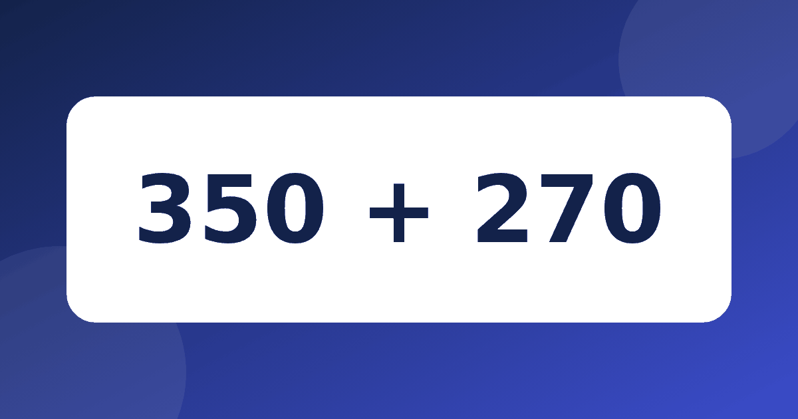

Четвёртый класс: как считать в голове большие числа и не путаться

В четвёртом классе числа становятся больше, и многие дети по привычке тянутся к столбику даже там, где можно обойтись без него. Между тем примеры с сотнями и тысячей часто проще решить в голове, если знать несколько опорных способов. Расскажем, как строить устный счёт 4 класс без напряжения: какие приёмы показать, как их закрепить и почему торопить ребёнка не стоит.
Что меняется к четвёртому классу
Раньше ребёнок опирался на десяток: добавил до десяти, а остаток прибавил отдельно. Теперь опорой становятся сотня и тысяча, но идея прежняя: неудобное число превращаем в круглое, считаем легко, а потом аккуратно возвращаем то, что взяли лишнего. Если десяток всё ещё даётся с трудом, начните с повторения и загляните в статью как объяснить сложение через десяток. Крупные числа на такой основе строятся гораздо спокойнее.
Три опорных приёма
Приёмы устного счёта удобно держать в голове как короткий список. Показывайте их по одному, на небольших примерах, и не переходите к следующему, пока предыдущий не стал понятным.
- Дополнить до круглого. Пример 98 + 47. Берём у сорока семи два и получаем 100, остаётся 45. Итого 145.
- Округлить и поправить. Пример 199 + 76. Прибавляем 200, получаем 276, затем убираем лишнюю единицу. Ответ 275.
- Считать по разрядам. Пример 250 + 380. Сотни дают 200 + 300 = 500, десятки дают 50 + 80 = 130, вместе 630.
Ребёнку важно самому выбрать, какой путь кажется удобнее. Один и тот же пример можно решить разными способами, и это нормально.
Полезно иногда поменяться ролями: пусть ребёнок покажет свой способ на примере 147 + 96. Он может взять у девяноста шести четыре, чтобы получить 151, и добавить оставшиеся 92, выйдет 243. А может прибавить 100 и убрать 4, тоже получится 243. Оба пути верные, и такой разговор учит рассуждать, а не только вычислять.
Вычитание от круглого числа
Самые неприятные примеры для четвероклассника выглядят как 1000 − 368. Здесь помогает вычитание по частям: сначала отнимаем сотни, потом десятки, потом единицы. Получается 1000 − 300 = 700, затем 700 − 60 = 640, затем 640 − 8 = 632. Проверить можно сложением: 632 + 368 как раз даёт 1000. Подробнее этот способ описан в статье вычитание по частям, там много примеров для самостоятельной работы.
Ещё один удобный случай: 600 − 257. Можно взять на единицу меньше, то есть 599 − 257 = 342, а потом вернуть единицу и получить 343.
Умножение тоже работает в голове
Если ребёнок знает таблицу, то часть примеров на умножение тоже решается устно. Например, 36 × 5 удобно заменить половиной от 36 × 10. Десять раз по 36 будет 360, половина от этого 180. Так же и 4 × 25. Четыре раза по двадцать пять составляют 100, а 8 × 25 уже 200. Про такой приём подробно рассказано в статье умножение на 5 и на 10.
Если таблица даётся с трудом, не спешите с такими примерами: сначала укрепите основу, а к приёмам вернитесь позже.
Где чаще всего ошибаются четвероклассники
У приёмов есть свои подводные камни, и полезно заранее о них знать. Первая типичная ошибка: ребёнок округлил число, посчитал и забыл вернуть поправку. Например, в примере 345 + 298 он прибавил 300, получил 645 и назвал это ответом. Правильно вычесть две лишние единицы, и выйдет 643. Научите ребёнка прикидывать: 298 чуть меньше трёхсот, значит, ответ должен быть чуть меньше 645.
Вторая ошибка связана с разрядами. При вычитании 1000 − 368 дети иногда отнимают сотни от десятков или теряют нолик. Помогает привычка проговаривать вслух, что именно сейчас вычитается: сотни, десятки или единицы. Третья ошибка вызвана торопливостью, и бороться с ней проще всего спокойным тоном и просьбой пересказать ход мысли.
Как тренироваться, чтобы получалось
Лучше заниматься понемногу и часто: десять минут в день, три или четыре примера на один приём. Хочется считать в уме быстро, но темп появляется сам, когда способ понятен и не требует усилий. Если подгонять ребёнка раньше времени, он начнёт угадывать, а не думать. Ошибку лучше разобрать вместе: попросите рассказать, как он считал, и найдите шаг, где закралась неточность.
Для регулярной практики подойдёт тренажёр «Устный счёт». В нём есть модули на состав числа, сложение без перехода, сложение через десяток и вычитание. Есть числовая лента с наглядными шагами, а кнопка «Объясни по-другому» предлагает три варианта объяснения. Бесплатно открыт модуль «Состав числа». Тренажёр не заменяет учебник, но помогает укрепить основу, на которой держатся все приёмы этой статьи.